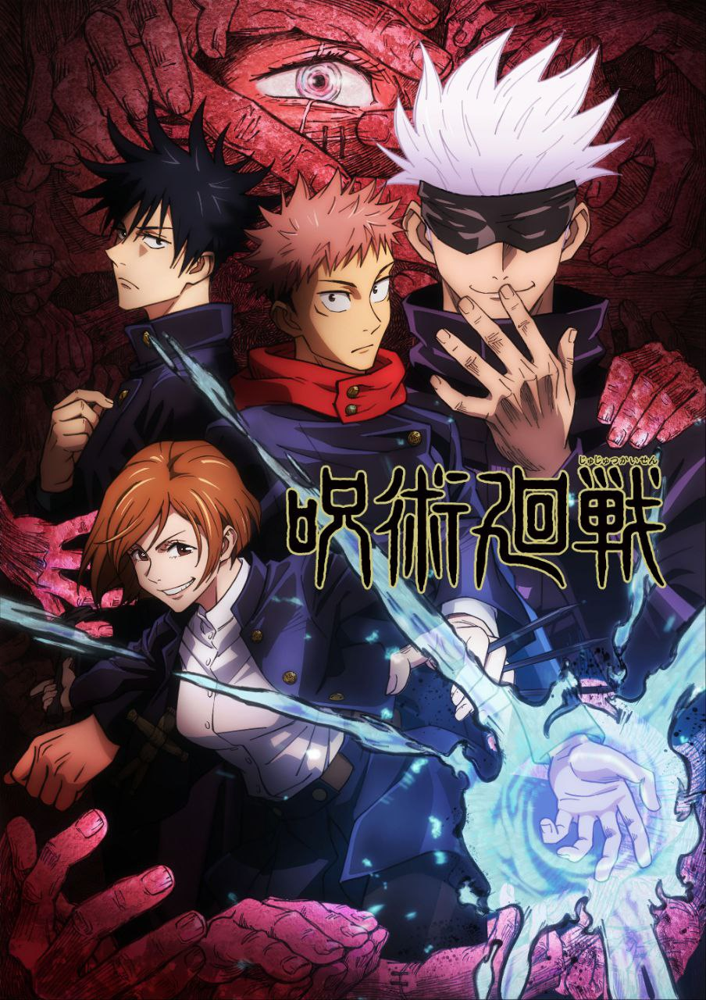

After their battle with Gyutaro and Daki, the Upper Rank Six siblings, Tanjiro, Zenitsu, Inosuke, and Nezuko are found by the Kakushi. In the Infinity Castle, Muzan Kibutsuji summons the remaining five Upper Rank demons – Akaza, Upper Five Gyokko, Upper Four Hantengu, Upper Two Doma, and Upper One Kokushibo. He admonishes them for their failure to kill the Ubuyashiki family and find the Blue Spider Lily. When Gyokko provides new information, he is sent on a joint mission with Hantengu. While Zenitsu and Inosuke are summoned to individual missions, Tanjiro continues his rehabilitation. When his swordsmith Hotaru Haganezuka refuses to forge him a new sword, Tanjiro is told to meet him at the Swordsmith Village to discuss the matter in person. He arrives with Nezuko and meets the village's chief, Tecchin Tecchikawahara, who reassures Tanjiro he will bring Hotaru back to build the sword. Tanjiro is later shown to the village's hot springs where he meets the Love Hashira Mitsuri Kanroji, who is initially dejected after being ignored by an unknown person. While in the hot springs, Tanjiro encounters Genya, the Wind Hashira Sanemi Shinazugawa's younger brother and fellow Demon Slayer, who refuses Tanjiro's hospitality and storms off. At the village, Mitsuri hints at Tanjiro about a "secret weapon" hidden somewhere that can make him stronger and bids farewell to the siblings. The next day, while searching for the weapon, Tanjiro finds the Mist Hashira Muichiro Tokito in an argument with someone and sees that seemingly with them is a man from his dreams
Trailer Demon Slayer
In order to maintain the state of peace between the rival nations of Westalis and Ostania,[a] a Westalian agent code-named "Twilight" is tasked with spying on Donovan Desmond, leader of the National Unity Party within Ostania. However, due to Desmond being notoriously reclusive, the only way Twilight can get close to him is to enroll a child in the same private school as Desmond's sons and pose as a fellow parent. To accomplish this and present the image of a happy family, he creates the alias of Loid Forger, adopts a young orphan girl named Anya, and marries a woman named Yor Briar. However, unbeknownst to him Anya can read minds and Yor is in fact a professional assassin. Neither Loid nor Yor are aware of each other's true identities, or that Anya knows their true professions. The family later takes in a dog with precognitive abilities whom they name Bond. Despite these unknown factors and Twilight's occasional lapses of common sense due to years of being a spy, he must learn to play the role of the perfect father and husband in order to carry out his mission.
Trailer Spy x Family

Yuji Itadori is an unnaturally fit high school student living in Sendai. On his deathbed, his grandfather instils two powerful messages within Yuji: "always help others" and "die surrounded by people." Yuji's friends at the Occult Club attract Curses to their school when they unseal a rotten finger talisman. Yuji swallows the finger to protect Jujutsu Sorcerer Megumi Fushiguro, becoming host to a powerful Curse named Ryomen Sukuna. Due to Sukuna's evil nature, all sorcerers are required to exorcise him (and, by extension, Yuji) immediately. However upon seeing Yuji retaining control over his body, Megumi's teacher Satoru Gojo brings him to the Tokyo Prefectural Jujutsu High School with a proposal to his superiors: postpone Yuji's death sentence and train under Gojo until he consumes all 20 of Sukuna's fingers so the Curse can be eliminated. At the same time, a group of Cursed Spirits plot a multi-layered attack on the world of Jujutsu sorcery, including the Cursed Spirit Mahito and a corrupted sorcerer named Suguru Geto, who was executed by Gojo a year prior.